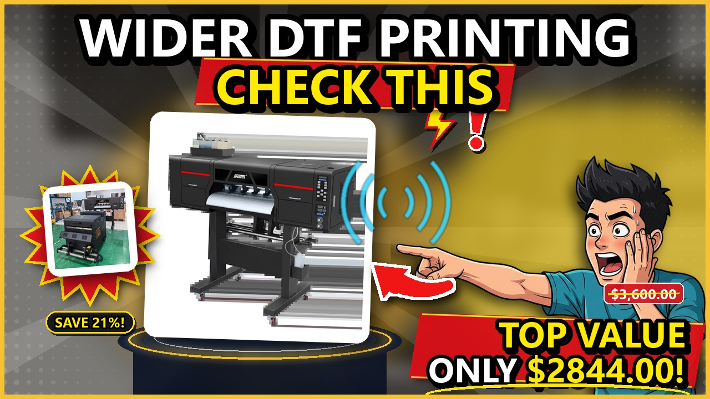

Looking for an A1 DTF Printer? Check Out the Santos A1 60cm

Looking for a wide-format A1 DTF printer in the UK? The Santos A1 combines CMYK and white colour printing, supports film up to 60 centimetres wide, and includes a powder shaking machine for a streamlined transfer workflow. Check the link in the description, or if you don't get it there, please check the link in the comments.
Was $3,600.00, now $2844.00
👉 Check the link in the description — if you don't see the link, please check the link in the comments!
*The link in the description or comments is an affiliate link. I may earn a small commission at no extra cost to you. Prices may vary, so check the latest price via the link.*
#A1DTFprinter #SantosA1DTFprinter #60cmDTFprinter #wideformatDTFprinter #DTFprinterUK #CMYKwhiteDTFprinter #DTFpowdershaker #DTFtransferprinting #DTFprintingequipment #customclothingprinter